Chapter I
The Plantation
Before 1904
The story of Nookery Hill does not begin with a house. It does not even begin with a road. It begins with a path.
Before the path, however, there was the ground itself. The plot now occupied by Nookery Hill lies on the northern edge of the medieval demesne of Rushen Abbey — the Cistercian foundation of 1134 whose ruins still stand a few hundred yards to the south-east. The wider landscape preserves the deep history of the abbey’s working lands in its field-names and boundaries, though the individual plots that would eventually become Nookery Hill leave their first distinct trace only in the 1904 footpath petition.
After the dissolution of the abbey in 1540, the demesne lands passed through many hands. By the late 19th century, the slope north of the abbey ruins had been planted with broad-leaved trees — beech and sycamore, predominantly — and was being managed as a small commercial plantation interspersed with orchard ground. Earth tracks crossed it. Local people walked through it. The whole area, between the back of the working abbey gardens and the open ground further north, was casually called the plantation.
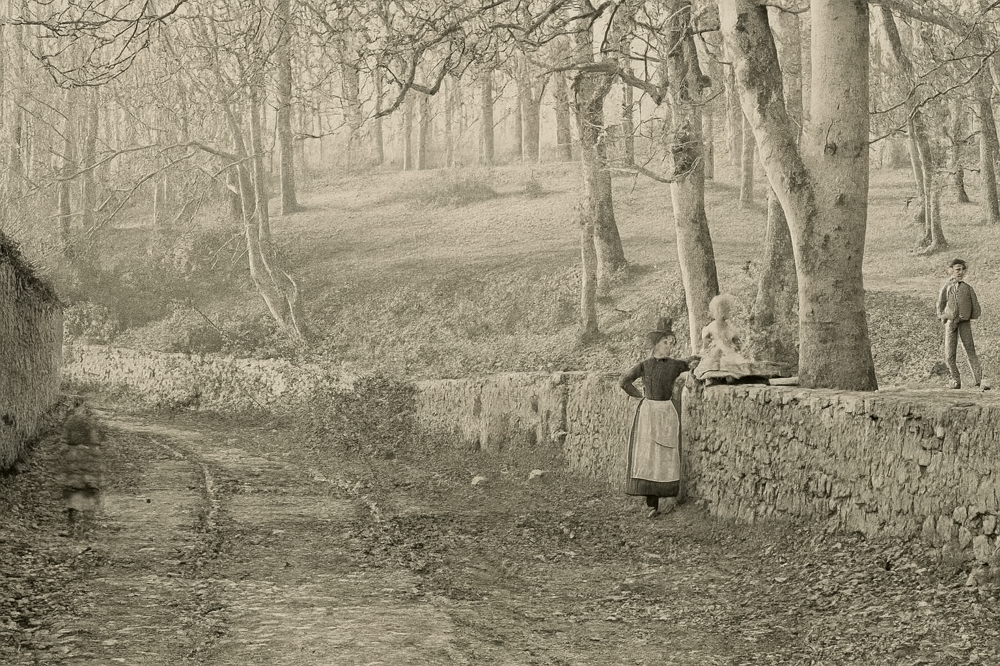
A photograph survives from around 1860, showing a worn earth track running between dry-stone walls with mature beech rising up a slope behind. A young Manx woman in working apron and bonnet stands beside the wall, a small child seated on the stones, a boy further off. The trees in the picture are perhaps eighty years old — planted, then, in the 1780s — which gives some sense of when the plantation took its modern form. The path the photographer was standing on may well be the one that, in 1904, the Cubbon family would petition to move.
Chapter II
The Path and the Petition
1904 — 1905
Long before the house was built or the land sold into private hands, a public footpath wound its way across the orchard grounds behind Rushen Abbey. In the early years of the twentieth century, this path — little more than a muddy track — crossed a gently sloping field used for fruit and market gardening. But as the Edwardian years brought pressure to build new homes, it became an obstacle.
In the spring of 1904, William Christian Cubbon, Philip Christian, and Thomas William Cubbon — owners of the orchard and the adjoining plantation — gave notice of their intention to petition the Insular Highway Board for the diversion of the public footpath that ran through the centre of their land. Their plan was to realign it neatly along the northern boundary of the plot, leaving the rest of the ground free for what they hoped would be one villa, perhaps several. They offered to surface and fence the new path themselves.
It was not, as the press coverage made plain, an uncontested administrative measure. By the time the Highway Board sat at Ballasalla on a Wednesday in April 1904 to hear the petition, Thomas Jefferson, William Gold, Richard Burns, and John Murray — represented by the advocate G. Fred Clucas — had registered formal opposition. The petitioners were represented by Mr L. C. Kewley. The Board, chaired by Deemster Kneen, comprised W. Quayle, P. Cadman, J. C. Crellin, R. Cowley, and Jos. Qualtrough, with C. T. C. Callow as Clerk.2Manx press, 1904“Ballasalla Right-of-Way Case: Highway Board hear a petition” — contemporary newspaper coverage of the April 1904 hearing.
A revealing exchange emerges from the contemporary reporting. The foundations of one of the proposed houses had already been dug before the petition was lodged, and had cut into the line of the old footpath. The Great Enquest had been called together, found that the path was being interfered with, and ordered the builders to restore it. The 1904 petition, in other words, was partly a retrospective fix for an unauthorised start: the Cubbons were seeking statutory permission for something they had already begun on the ground.2Manx press, 1904“Ballasalla Right-of-Way Case: Highway Board hear a petition.”
Under cross-examination, W. C. Cubbon was candid. The path had been on the land when they bought it, and they had “looked upon it as a useless piece of land.” The plan was to build a two-storey villa first, with two more on the rest of the ground — though, he conceded, “we might build a row of houses.” Mr Cadman objected that putting the path in front of the houses would not do, since gardens would be needed there. The hearing was adjourned to Douglas for a fortnight to consider further.
The 1904 Indenture and the 1905 Orders
The matter was settled in a sequence of formal instruments registered over the following twelve months. The Deed of Covenant of 11 November 1904 was made between five parties: William Christian Cubbon (1st part), Phillip Christian (2nd part), the Trustees of the settlement of Charlotte Cubbon (3rd part), Charlotte Cubbon herself (4th part), and the Highway Board (5th part). The presence of Charlotte Cubbon both in her own right and through trustees suggests her interest in the land was held under a marriage settlement — standard practice for the property of a married woman before the Married Women's Property reforms took full effect.3Deed recital in Feb 1985 / 317The five-party structure of the 1904 indenture is recited in detail in the 1985 conveyance to S. J. Milligan.
The Order of the Highway Board certifying the diversion followed on 6 April 1905, and the Order of Tynwald confirming the matter was made on 11 April 1905. Curiously, none of this paperwork was placed on the public record at the time. The three Cubbon-Highway Board documents lay unregistered for thirty-three years, only being filed at the Rolls Office on 23 June 1938 as part of the documentation tidying-up for the sale we shall come to shortly. They were given the consecutive deed numbers June 1938 / 110, /111 and /112 — sitting in the register, by deliberate design, immediately alongside the deed numbered June 1938 / 122.4Manx Registry of DeedsDeed nos. June 1938 / 110, 111, 112 — the 1904 and 1905 footpath documents, registered together on 23 June 1938.
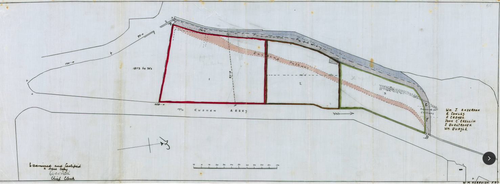
Boundaries and Burdens: what the 1904 Deed locked in
Alongside the footpath redirection came a set of restrictive covenants that shaped not just access but the entire layout and use of the land — rules that, on paper, would bind the ground for decades. The covenants were designed to protect light, air, and appearance along the new footpath, while regulating development across the wider site.
The deed permitted the construction of only two villas, one on each of the southerly plots, with a maximum footprint of 1,800 square feet each. Any other structures — sheds, outhouses, fences, boundary walls — were restricted to a height of no more than five feet, unless approved in writing. The northern strip and the new path itself were to remain free of any building or erection whatsoever without formal permission from the Highway Board. The path was strictly for foot traffic; the deed forbade its use as a cart road, with one small exception allowing the landowners to cross it at fixed points (“E to F”) for agricultural access.
These restrictions were, as it turned out, overtaken by events almost from the moment the ink dried. The Cubbons' own house The Orchards already stood within the boundary when the 1904 plan was drawn. By 1938, two further dwellings would rise on the same ground — and one of them would straddle the very strip the 1904 deed had been most determined to keep clear.
Chapter III
A Quiet Decade and a Corporate Rebirth
1905 — 1937
For thirty years after the path was settled, the ground around it changed slowly. The Cubbons continued to live at The Orchards. The plantation remained a plantation. The footpath ran along its new line on the northern boundary, as the 1905 Order had directed. Meanwhile, a few hundred yards to the south, the working operation of Rushen Abbey was being quietly transformed.
Around 1914, a Manx-incomer of about thirty-seven, Alfred Montague Simcocks — born around 1877, and known to most of his contemporaries as “Monty” — joined the small concern then trading as Rushen Abbey Limited. He had come to the Island in his youth and, with a Mr Bert Livesey, had taken over the Glen Helen Hotel and Gardens, which he ran for a number of years. In about 1914 he became interested in Rushen Abbey Ltd, and within a few years had succeeded Walter Christian Cubbon as manager of the company. Cubbon remained on as chairman for some years more.5AMS obituary, 1954“Mr 'Monty' Simcocks” — obituary in the Manx press, September 1954.
Ten years later, on 1 July 1924, Rushen Abbey Limited was placed in liquidation and its assets were transferred to a successor company, Rushen Abbey and Gardens Limited. The new name reflected what the operation had become under Simcocks's management: not just an old abbey site with a hotel, but a full horticultural and tourist enterprise. The gardens grew strawberries on a commercial scale; the works produced jam; the hotel housed visitors who came to walk among the ruins; and over the following decades a small pleasure-ground for children would be added. Through the 1920s and 1930s the company prospered, with Simcocks as managing director and a Mr Albert Rowell — both a director and the company's mortgagee — as his board colleague.6Deed Jul 1970 / 355Recites Rushen Abbey & Gardens Ltd's title to certain land as derived from “Deed of Conveyance bearing date the 1st day of July 1924 from Rushen Abbey Limited in liquidation.”
This corporate continuity is important to the story of Nookery Hill, because by the time the houses came to be built in 1938 the same family that had petitioned to divert the footpath in 1904 was no longer the principal player. The Cubbons remained connected — W. C. Cubbon was retired to Curlew Cottage at Scarlett near Castletown by the late 1930s, with his wife Elizabeth MacArthur Cubbon — but the active hand was now the Simcocks family, working through the corporate structure of Rushen Abbey & Gardens Ltd.1Deed Jun 1938 / 114Conveyance: W. C. Cubbon to Rushen Abbey & Gardens Ltd.
Chapter IV
The Two Villas
February — June 1938
The first public sign that something was changing on the ground appeared in February 1938, when a small advertisement appeared in the Manx press:
TO LET — Newly Erected Detached Villa and Garage in Abbey Road, Ballasalla. Gas, Electricity, Main Drainage. Latest Fittings and Conveniences. View by Appointment. Apply, Rushen Abbey. Tel: 17 Castletown.
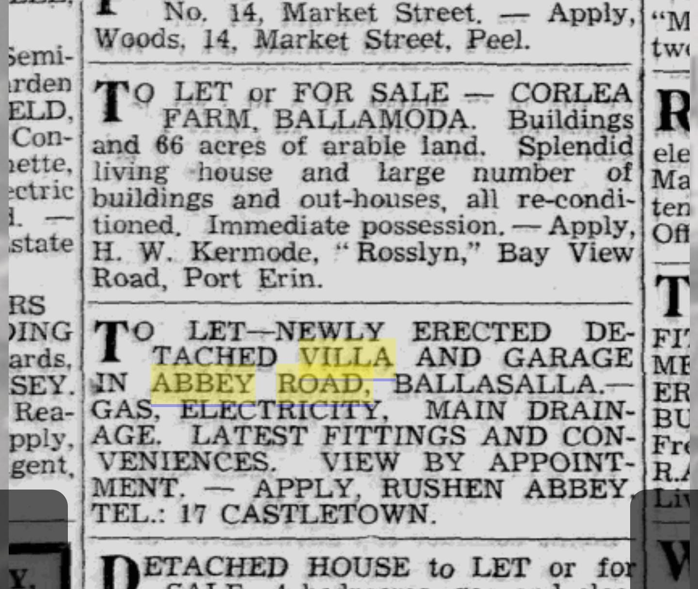
The advertisement is striking for several reasons. First, the property was described as already “newly erected” by February — yet, as we shall see, the formal planning approval for two villas at this location did not come through until 2 June 1938. Either construction had already raced ahead of the paperwork (entirely possible in the relatively informal regulatory regime of the late 1930s) or the advert preceded actual completion by some months, with the builders gambling on imminent approval. Second, applications were to be made to Rushen Abbey — that is, to the company itself, not to a private owner. The houses were being built as rental investments under company management, not as homes for any individual.7Manx press, February 1938“To Let” advertisement.8PA-1439 (June 1938)Isle of Man Development Board planning approval for two detached houses and garages, Rushen Abbey, Ballasala. Architects: Lomas & Barrett LRIBA.
Mrs M Simcocks's project
The architectural plans, lodged with the Development Board on May 1938 and approved on 2 June, are unambiguous about who the legal proprietor of the development was. The cover sheet of Plan No 1439 names the owner as “Mrs M Simcocks” — Lillian Maude Simcocks, Alfred Montague's wife. The architects were the well-regarded Douglas firm of Lomas & Barrett LRIBA, who would also be involved in subsequent work on the site. The application was for “two detached houses and garages, Rushen Abbey, Ballasala.”8PA-1439 (June 1938)Owner: Mrs M Simcocks. Architects: Lomas & Barrett LRIBA.
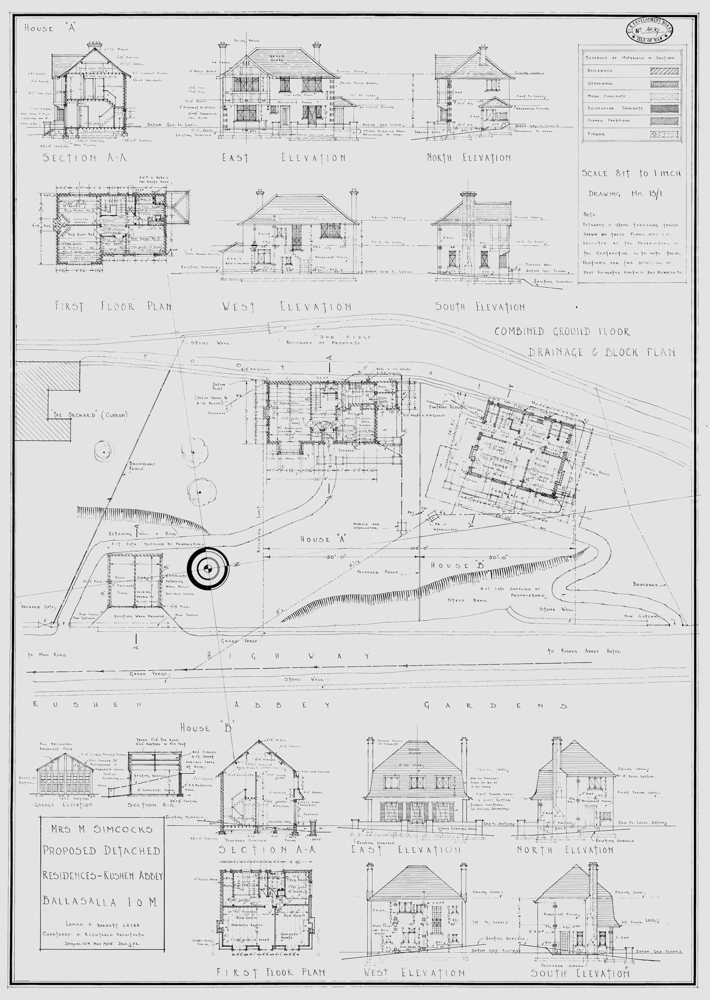
So the development was, formally, the project of Mrs Simcocks, not her husband. This was not unusual practice. In an era when professional men's incomes were often invested through their wives' names — partly for tax efficiency, partly for matrimonial security — the device of a wife-as-proprietor was familiar. What is striking, however, is the mechanism by which she came to own the land in the first place.
How the land changed hands
On 18 June 1938 — just sixteen days after planning approval — Rushen Abbey and Gardens Limited executed an Indenture conveying a plot of one rood, seven and a half perches (about 1,200 square yards) to Lillian Maude Simcocks, wife of Alfred Montague Simcocks, for the sum of £54 18s 5d. The plot was bounded north and south by the Company's own land, east by the highroad (Abbey Road), and west by the public pathway diverted in 1904.9Deed Jun 1938 / 122Conveyance: Rushen Abbey & Gardens Ltd to Lillian Maude Simcocks. Indenture dated 18 June 1938, registered 23 June 1938.
The £54-18-5 figure is suspicious in its precision: it is the kind of number that arrives at the end of a calculation, not the kind that emerges from a market negotiation. The deed of conveyance was executed for the company by two directors — Albert Rowell and Alfred Montague Simcocks himself, with Harry Edwin Kneale as company secretary. Alfred was therefore, in the same instrument, both vendor (in his capacity as director of the selling company) and effectively the husband of the purchaser. The transaction was internal to the family enterprise. Lillian Maude was, in 1938, not yet living at Always: her address on the conveyance is given as “Rushen Abbey, Ballasalla” — the company's working address, where the Simcocks were resident at Rushen Abbey House.9Deed Jun 1938 / 122Signed by A. Rowell and A. M. Simcocks as Directors, H. E. Kneale as Secretary. Lillian Maude resident at Rushen Abbey at execution.
Three further covenants bound the new owner. First, the property was to be subject to the 1904 Cubbon-Highway Board covenants, which the 1938 deed expressly incorporated. Second, the property was not to be used for any trade, manufacture or business which the Company might consider injurious to or in competition with its own business. Third, Lillian Maude was to erect and maintain good fences on all sides at her own expense. The non-compete clause is particularly telling: the company was actively protecting its jam, its hotel, and its gardens against the possibility that the new dwelling might one day host a competing operation.
A small registry-clerk's manoeuvre
On the very same Thursday afternoon — 23 June 1938, at twenty past noon — that the Indenture conveying the land to Lillian Maude was being recorded at the Rolls Office, a small administrative tidying-up was also taking place. The 1904 Cubbon-Highway Board Indenture, the 1905 Highway Board Order, and the 1905 Tynwald Order — all of which had sat unregistered for over three decades — were placed on the record alongside the conveyance, taking the deed numbers 110, 111 and 112. The conveyance itself took number 122. The bureaucratic logic was straightforward: you could not give Lillian Maude clean title to a plot whose footpath history was unregistered. The 1904 paperwork was registered because of the 1938 conveyance, not for its own sake.4Manx Registry of DeedsDeed nos. June 1938 / 110, 111, 112, 122.
There is one more curiosity in this June 1938 cluster of registrations. On 11 June 1938 — twelve days before the conveyance to Lillian Maude — W. C. Cubbon and his wife Elizabeth had sold a separate parcel of land, part of Abbey Demesne and called Cabel Leonard, to Rushen Abbey & Gardens Ltd for about £110. Cubbon had only acquired that parcel three months earlier from one Thomas George Henry Maurice Moore. So in the spring and summer of 1938 there was a small flurry of land transactions consolidating the company's holdings, with Cubbon himself acting as an intermediary on some pieces of ground separate from (but adjacent to) the Always site itself.1Deed Jun 1938 / 114Conveyance: W. C. Cubbon to Rushen Abbey & Gardens Ltd.
Two houses, one project
The Lomas & Barrett plans show — and this is worth being precise about, because the point has been confused — two detached houses, not one. They were labelled simply House A and House B on the drawings. House A would become known as The Beeches, standing to the west and partly straddling what had been Plots 1 and 2 of the 1904 subdivision. House B would become known as Always, standing to the east and straddling Plots 2 and 3 of the same subdivision. To the west of both stood The Orchards, the Cubbon house dating from before 1904.
This arrangement involved a careless — or knowing — flouting of the 1904 covenants. The Beeches and Always were two villas, which was within the two-villa cap on Plots 1 and 2. But The Orchards already stood on Plot 1, making three dwellings on the ground designed for two. More substantively, Always extended onto Plot 3, on which the 1904 deed had forbidden any building or erection whatsoever without Highway Board permission. No deed of variation or covenant release survives in the records. The 1938 development simply ignored the constraints. Whether this was deliberate or a function of the corporate restructuring obscuring institutional memory is now impossible to say, but the family at the centre of it had every reason to know better: Alfred Montague Simcocks had succeeded W. C. Cubbon, the original 1904 petitioner, as manager of the company that imposed the covenants on itself.
Chapter V
First Tenants and the War Years
1938 — 1948
With Always completed by some point in 1938 or 1939, Lillian Maude let it out. Throughout the next decade the Simcocks themselves remained at Rushen Abbey House — Alfred running the company, Lillian Maude beside him — while Always passed through a sequence of tenants.
Mrs Frances Annie Garside
The first known occupant of Always was Mrs Frances Annie Garside, a widow. Her presence is recorded by what was, in the end, her departure: the Isle of Man Examiner of 12 December 1941 reported her death and the value of her personal estate as £1,400, with one John Robert Quayle as her executor. A modest but comfortable estate. The advert that ran in the Manx press on 17 February 1942 fleshes out the picture considerably:10Garside obituary, Dec 1941Malew column, Manx press, 12 December 1941.
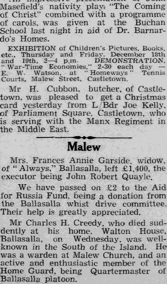
Highly attractive Sale by Public Auction of costly quality, modern HOUSEHOLD FURNITURE (including the good quality appointments removed from ‘Always,’ Ballasalla, re the Estate of the late Mrs Garside)
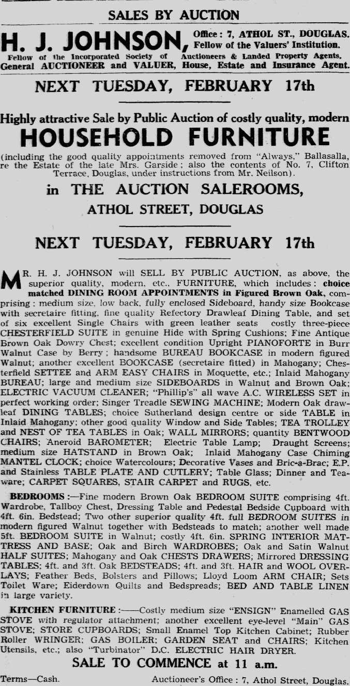
The catalogue is a small treasure: a figured brown oak dining suite with green-leather chairs, a Chesterfield in genuine hide with spring cushions, an upright pianoforte by Berry, a Phillip's all-wave AC wireless, an electric vacuum cleaner, a Singer treadle sewing machine, and — almost domestically heroic — a Turbinator DC electric hair dryer. This was a thoroughly modern, comfortably-furnished house, of exactly the kind the February 1938 advert had promised. Mrs Garside had moved into a brand-new villa with the latest fittings; she lived there for perhaps three years; and her contents were dispersed at the H. J. Johnson auction rooms in Athol Street on a Tuesday morning in February 1942.11Auction notice, February 1942H. J. Johnson auction, Athol Street, Douglas. Tuesday 17 February 1942.
The Smiths and the Douglasses
The next tenants are recorded chiefly through the small bureaucratic traces of property maintenance. In September 1942, only eight months after the Garside contents auction, a planning application was submitted on behalf of “Mrs Smith of Always”, with the owner named as Mr R. Johnson Smith. They were applying to build a small garden tool shed. The application was approved on 1 October 1942. By August 1943, however, the registered occupant had changed again. A planning application for a fuel store and workshop at “Always, Ballasalla” was lodged by one L. Douglas (or Douglass — the spelling varies). And by July 1944, a third small application — for a greenhouse this time — was approved, with L. Douglass now listed at The Beeches, not Always. Either the Douglasses moved across from Always to The Beeches in 1944, or the wartime occupancy of the two villas was shifting fluidly, with the company-as-landlord moving its tenants around as circumstances dictated.12PA-2665 / PA-2777 / PA-2927Three small planning applications from 1942–44 documenting the wartime tenant succession.
The jam factory in wartime
Behind the back garden of Always, throughout these years, the productive heart of Rushen Abbey & Gardens was running at full stretch. According to Alfred Montague's obituary, “during the last war the jam factory supplied all the jam for the Island and the Service establishments.” The aerial photograph of 3 May 1946 shows the working complex in its post-war state: a tight cluster of long-roofed buildings inside walled enclosures, with greenhouses and cold-frames in rows, and a roadway running along the south of the houses. Always and The Beeches sit at the south-western edge of the operation, no extensions visible, their gardens still small and rectangular. The 1904 footpath line remains intact along their northern boundary.5AMS obituary, 1954Manx press, September 1954.
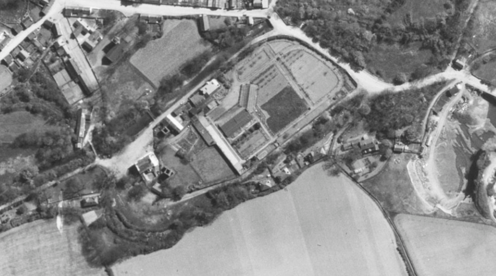
The 1948 extension
In May 1948, Rushen Abbey & Gardens Ltd conveyed a small further parcel — only one hundred square yards — to Lillian Maude Simcocks for £7 10s 0d. The plan, again drawn by J. Philipps Lomas, shows the extension as a small rectangle on the eastern side of Always, tidying the boundary between the residential plot and the company's working land. By 1948 the directors of the company had changed — Albert Rowell was no longer on the board; in his place sat one W. A. P. (or M. A. P.) Powell, and B. B. Simcocks — almost certainly Alfred Montague's youngest son, Herbert Harold (“Bertie”) Simcocks, who had begun assuming his father's managerial duties in the late war years. The company secretary by then was A. S. Faragher. Lillian Maude's address on this 1948 deed is still given as “Rushen Abbey, Ballasalla” — confirming that even ten years after acquiring Always, the Simcocks themselves had not yet moved into it.13Deed May 1948 / 239Conveyance of 100 sq yd extension. Plan by J. Philipps Lomas, Lomas & Barrett.
Chapter VI
Always Becomes Home
c.1949 — 1954
The exact date of the Simcocks's move from Rushen Abbey House into Always is not recorded in any document we have, but it can be bracketed. In May 1948 they were still at Rushen Abbey; by September 1954 Alfred Montague was unambiguously “of ‘Always,’ Abbey Road, Ballasalla.” Somewhere in those six intervening years they relocated. The most likely trigger was Alfred's failing health. His 1954 obituary records that “it was towards the end of the war that Mr Simcock's health began to fail and his duties were largely taken over by his youngest son, Bertie, a former prisoner-of-war.” By the late 1940s, Alfred had stepped back from day-to-day management. The Rushen Abbey House residence presumably went with the managerial role; once Bertie had effectively taken over, his parents needed a home of their own, and Always — the rental property Lillian Maude had built ten years earlier — was the obvious choice.5AMS obituary, 1954Manx press, September 1954.
Alfred Montague Simcocks died at Always on Saturday, 25 September 1954, aged seventy-seven. The obituary in the Manx press devoted nearly a full column to his career — Glen Helen, Rushen Abbey, the wartime jam contracts, his role as Past Master of the Mona Lodge of Freemasons. His personal estate was probated at £7,000. He left a will dated 29 January 1954 (mistakenly typed as “1953” on the face of the document, a slip later corrected by a separate affidavit from his solicitor's clerk). The will appointed his son Herbert Harold and his solicitor Robert Kinley Eason as joint executors and trustees, and left the entirety of his real and personal estate to his wife Lillian Maude. A separate set of detailed directions governed his shareholdings in Rushen Abbey and Gardens Ltd — three hundred shares to Lillian Maude in her own right, a further eight hundred not yet transferred in her name, and a series of family allocations that had already been made over the preceding years: one hundred shares each to his children William Montague, Lillian Molly Kennaugh and Alfred Howard; fifty to his daughter-in-law Ethelreda Simcocks (Bertie's wife); and 250 to Bertie himself, the managerial heir.14AMS probate, 1954Probate Form, High Court of Justice, Common Law Division, Testamentary Jurisdiction. Reference: 1954 / 469.
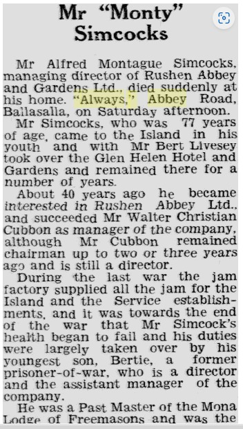
Chapter VII
Lillian Maude's Tenure
1954 — 1963
Lillian Maude Simcocks lived on at Always as a widow for another eight and a half years. She was the legal owner not only of Always but also of The Beeches — the sister villa Lomas & Barrett had built in 1938 — and her management of both houses through her later years is detailed in the will she made in December 1957.
The will, dated 23 December 1957 and prepared by Dickinson, Cruickshank & Co of Athol Street, Douglas, lists her five children formally: William Montague Simcocks (Electrical Engineer, then living at “Brunshaw,” Beach Road, Port St. Mary); Mary Lillian Molly Kennaugh (already living at The Beeches with her husband Mr Kennaugh); Amy Maud Marjorie Walton (then in Porters Lake, Nova Scotia, with her husband Mr Walton); Alfred Howard Simcocks (Advocate, of North Abbey, Ballasalla); and Herbert Harold (“Bertie”) Simcocks (Company Director, of Rushen Abbey House).15LMS will, 1957 — probate 1963Reference: 1963 / 157. Will dated 23 December 1957, probate granted 16 March 1963.
Two specific bequests in the will are revealing. First, Lillian Maude directed that The Beeches should be offered to her daughter Lillian Molly Kennaugh, who was already its occupant, on a fixed-value valuation by a competent valuer. Second, as to Always:
I hereby further especially direct that my Trustees shall on my death permit any of my children other than my daughter the said Lillian Molly Kennaugh to purchase the same at such sum as shall be fixed therefore by a competent and qualified Valuer…
The clause is precisely contrived to keep the two daughters' shares of property equivalent. Lillian Molly was to have The Beeches and could not also bid for Always; one of the other four children was to have Always; the proceeds and entitlements were to balance out across the family. As a piece of estate planning it is unsentimental, methodical, and obviously the product of long thought. By a later interlineated amendment — sworn to by John Robert Clague, the Advocates' Managing Clerk at 37 Athol Street — Lillian Molly was given a fall-back: she could acquire Always if none of her siblings wished to. The interlineation was made before the will was executed and was simply a careful family-law belt-and-braces.
Lillian Maude died at Always on 18 February 1963. Her personal estate was probated at £8,000 (the real property, of course, sat outside this figure). Probate was granted on 16 March to her son Bertie and to Robert Kinley Eason, by then no longer at Athol Street but installed at 1 Hope Street, Douglas, as His Honour the High Bailiff.15LMS probate, 1963Reference: 1963 / 157.
Chapter VIII
William Montague's Years
1963 — 1981
On 16 May 1963, three months after the grant of probate, Bertie and the High Bailiff (acting as Lillian Maude's trustees) conveyed Always to William Montague Simcocks, “Electrical Engineer,” for £3,600. The deed was registered on 1 October 1963 as Deed No. 290 in the October book. The Beeches went separately to Lillian Molly Kennaugh under the same will and at around the same time.16Deed Oct 1963 / 290Trustees of LMS will to William Montague Simcocks. £3,600.
William was already living at Always when he bought it. He had presumably moved in to look after his ageing mother sometime during her widowhood, replacing his earlier Port St. Mary address. The 1963 deed describes the property as comprising the two parcels (1938 and 1948) together with “the dwelling house called and known as Always, the garage and all other buildings now erected on the said parcels of land.” The deed grants William a right of access over the adjacent Beeches plot “for the purpose of maintaining repairing and renewing the garage erected on the Scheduled Property” — confirming that the Always garage was on the Beeches side of the boundary line, accessed by mutual arrangement between brother-in-law and sister.
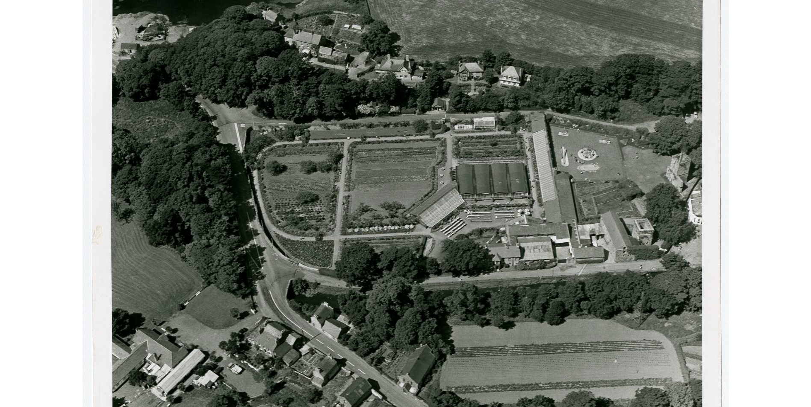
William lived alone at Always for the next eighteen years. He never married. His later years coincided with the gradual transformation of the Rushen Abbey operation from a working horticultural concern into a tourist attraction — the strawberry beds gave way to family-rides infrastructure, visible on the 3 March 1974 aerial as a circular feature with radial spokes in the eastern part of the gardens. The jam factory contracts wound down. Bertie, who in 1963 had still been a “Company Director” at Rushen Abbey House, by the late 1970s described himself as a “Catering Manager (retired)” living at Abbey Mill Lodge, Bridge Road — a different address altogether, suggesting that the family had relinquished or reorganised the Rushen Abbey House tenancy at some point in the intervening years.
One small bureaucratic event from William's tenure deserves a note. On 12 July 1977, William Henry Vincent, secretary to the Isle of Man Highway and Transport Board, swore an affidavit “in the matter of the Public Rights of Way Acts 1961 and 1970” concerning the footpath running along the northern boundary of Always. Some seventy years after the original 1904 diversion, the same line was being re-asserted under fresh statutory authority. The footpath that had defined the edge of this property since the Edwardian era remained, in 1977, still the legal edge of it. It remains so today.3Recital in Deed Feb 1985 / 317The 1977 Vincent affidavit is referenced in the recitals of the 1985 conveyance to Milligan.
William Montague Simcocks died at Always on 9 December 1981. He left a will dated 7 December 1979, prepared by Kelly, Luft, Stanley & Ashton of Douglas. His personal estate was probated at £14,000. The will appointed his brother Bertie and his sister Amy Maud Marjorie Walton (by then returned from Nova Scotia and resident at 19 Close Corneil, Port Erin) as joint executors. The bequests revealed something of his private life: £500 to one Freda Taggart of Phildraw, Ballasalla; the residue divided in equal shares among his surviving siblings, their named children — his nephew John Herbert Kennaugh (son of his “late sister Mary Lillian Molly Kennaugh,” who had therefore died at some point between 1963 and 1979), his nieces Anne Holker, Caroline Simcocks, Jennifer Walton and Brigette Simcocks — together with two outside beneficiaries: a friend, Helen Armstrong of Port Erin, and her daughter Valerie Julia Schofield of The Shore Hotel, Port St. Mary.17WMS probate, 1982Reference: 1982 / 9. Will dated 7 December 1979, probate granted 11 January 1982.
Probate was granted to Bertie and Amy on 11 January 1982. They held the property as trustees of William's estate for the next three years before placing it on the market.
Chapter IX
The Departure
February 1985
After forty-seven years in the Simcocks family — across two generations and ultimately three owners (Lillian Maude, William Montague, and William's trustees) — Always was sold out of the family on 12 February 1985. The purchaser was Sydney James Milligan of “Norhyrst,” Phildraw Road, Ballasalla. The price was £33,000 — a nine-fold increase in nominal value over the £3,600 William had paid in 1963, broadly consistent with general property inflation across the period.18Deed Feb 1985 / 317Trustees of WMS will to Sydney James Milligan. £33,000. Registered 20 February 1985 at 3:22pm, No 1105.
The transaction was almost certainly prepared with the long-term redevelopment of the site in mind, because on the same day — at twenty-three minutes past three on the afternoon of 20 February 1985, just one minute after the William-to-Milligan deed was registered as No 1105 — a second Indenture was placed on the record as No 1106. The Government Property Trustees conveyed to Mr Milligan, for £2,000, “the right title and interest (if any)” of the Crown in a small strip of land at Rushen Abbey. The cautious wording is significant: the Government was not warranting that it owned anything in particular, merely releasing whatever residual interest it might hold. The most likely subject is the Crown's residual interest in the 1904 footpath itself, or in some adjacent ribbon of public land. The two registrations bracketing one minute apart make clear that Mr Milligan was buying out every constraint and competing claim he could identify before turning to the question of what he might do with the property next.19Deed Feb 1985 / 307Government Property Trustees to S. J. Milligan. £2,000. Registered 20 February 1985 at 3:23pm, No 1106.
Chapter X
Nookery Hill
1985
The question of what Mr Milligan intended to do with the property was answered within weeks. On 22 March 1985 — thirty-eight days after the purchase was registered — planning application PA 85/216 was approved by the Malew Commissioners. The applicant was J. Milligan and the architects L. Phillips & Associates of Yena Cottage, Fleshwick Road, Surby, Port Erin. The drawings show a house considerably larger than the 1938 Lomas & Barrett original: a lower ground floor hewn into the slope, a reorganised ground floor, and a reconfigured first floor. The approval passed without recorded objection. The application had almost certainly been prepared and submitted before the conveyance even completed; the approval came through while the solicitors were still clearing their files.22PA 85/216 (March 1985)Applicant: J. Milligan. Architects: L. Phillips & Associates, Yena Cottage, Fleshwick Road, Surby, Port Erin. Approved 22 March 1985 by Malew Commissioners.
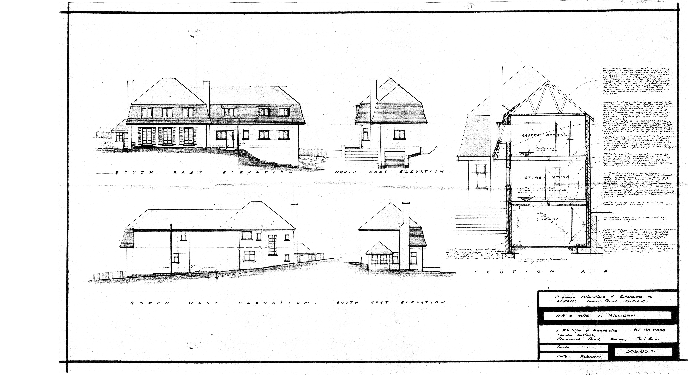
The extension pushed north, onto the very ground that the 1904 Cubbon-Highway Board deed had been most determined to keep clear — the strip above the footpath line, in the area marked as Plot 3 on the original plan, on which the 1904 covenant had forbidden any building or erection whatsoever. The constraint had survived eighty years. The new owner’s plans did not observe it.
Sometime in the years immediately following the completion of the work, the house acquired a new name. Always — the name Lillian Maude Simcocks had given it in 1938, and under which it had passed through forty-seven years of ownership — disappeared from the record. In its place came Nookery Hill: a name that evokes the wooded slope above the old abbey and the sense of a house folded into the hillside, which after the extension is exactly what it had become.
The name Always had carried the house through its whole recorded life: a brand-new rental in 1938, Mrs Garside’s villa, the wartime tenancies, the home Alfred and Lillian Maude moved into in their last years, William Montague’s quiet decades alone. The Simcocks, in other words, had always lived in Always. The house remained; the name went.
Chapter XI
After
1985 — present
The post-Simcocks ownership of Nookery Hill is recorded, if thinly, in a further sequence of deeds. In October 1985, Mr Milligan conveyed part of the property — believed to be the garage strip, finally returned to The Beeches side after twenty-two years of awkward cross-boundary maintenance arrangements — to Curphey Clague Taggart and Diane Taggart, then resident at The Beeches. The Taggart name connects, perhaps not coincidentally, to the Freda Taggart of Phildraw whom William Montague had remembered in his 1979 will.20Deed Oct 1985 / 426S. J. Milligan to Curphey Clague Taggart and Diane Taggart.
In May 1996, in a closely-spaced trio of registrations, Mr Milligan acquired a further parcel (the “Dolge” conveyance, registered as No 02524), sponsored an affidavit dealing with the original pathway arrangements (No 02525), and then sold the whole property onwards to Carlington Limited (No 02846). Seven years later, in February 2003, Carlington Limited conveyed the property to Barbara Jean Thompson.21Deeds 1996 / 02524, /02525, /02846; 2003 / 00798The post-1985 chain of title.
Each of these post-1985 transactions deserves fuller treatment than the sources presently allow. The 1996 affidavit in particular — re-examining the public footpath that had defined the property's northern edge since 1905 — closes a loop with the 1977 Vincent affidavit and the 1985 Government Property Trustees deal, suggesting that the legal status of the path has been a recurring administrative concern across the property's modern history.
After Barbara Jean Thompson's acquisition in February 2003, the documentary record goes quiet for over a decade. The Manx Registry of Deeds — the roll-system under which every transaction from the 1904 footpath papers to the 1985 Milligan conveyance had been recorded — was supplemented by the Isle of Man's Land Registration Act 1982, which began its practical roll-out in the years that followed. For Nookery Hill, first registration came in the late summer of 2015.
On 24 August 2015, a Vesting Assent was executed in which Dr Neil Thomson acted as both grantor and grantee — Executor of an estate transferring the property to himself as its beneficiary. The intervening chain of ownership between Barbara Jean Thompson's 2003 acquisition and this Vesting Assent has not yet been traced in full. Dr Thomson's registered service address was Lochletter House, Balnain, Inverness, Scotland — the first recorded occasion in the property's history that its proprietor was resident beyond the Island.
The title was formally first registered on 7 October 2015, by application no. 201501967, as title number 43-01219. Where a chain of Rolls Office deed numbers had defined the property's legal identity since 1904, it now had a Land Registry title.
The tenure was brief. On 30 October 2015 Dr Thomson transferred the property to Mrs Debbie Claire Scrimshaw, whose registration was completed on 2 December 2015 by application no. 201502533. Her service address on the register was Nookery Hill itself — Abbey Road, Ballasalla, IM9 3DF — confirming her as the resident owner, the first in the Land Registration era to live in the house under a formally registered title.
In August 2025 the property passed to Jonathan and Zoe Luckins, with the assistance of Jonathan’s mother Anne Luckins — acquired as a family home for them all to enjoy, and the occasion that prompted this history to be written.
The path that began as a muddy track through the Rushen Abbey plantation in the late nineteenth century has, for over a hundred and twenty years, defined the northern edge of this place. Each generation of owners has been obliged to come to terms with it. Each has done so a little differently. The track is still there.
Appendix A
Chronology
A working timeline
| 1134 | Foundation of Rushen Abbey, the Cistercian house from whose demesne the ground later derives |
| 1540 | Dissolution of the abbey |
| c.1780s | Plantation of beech and sycamore woodland on the slope (inferred from tree maturity in c.1860 photograph) |
| c.1860 | Photograph of woodland walls and earth path — earliest surviving image of the ground |
| pre-1904 | House foundations dug, cutting into footpath; Great Enquest orders restoration |
| April 1904 | Highway Board hears petition by W. C. Cubbon, Philip Christian and Thomas William Cubbon; opposed by Jefferson, Gold, Burns and Murray |
| 11 Nov 1904 | Deed of Covenant: Cubbon family (5 parties) & Highway Board |
| 6 April 1905 | Order of the Highway Board |
| 11 April 1905 | Order of Tynwald confirming |
| c.1914 | Alfred Montague Simcocks succeeds W. C. Cubbon as manager of Rushen Abbey Ltd |
| 1 July 1924 | Rushen Abbey Ltd in liquidation; assets transferred to Rushen Abbey and Gardens Ltd |
| July 1926 | Rushen Abbey & Gardens Ltd acquires the future Always plot (vendor unidentified in our papers) |
| 9 March 1938 | W. C. Cubbon acquires Cabel Leonard plot from T. G. H. M. Moore |
| Feb 1938 | “Newly erected detached villa and garage in Abbey Road” advertised to let |
| May 1938 | Lomas & Barrett plans (PA-1439) lodged with Development Board |
| 2 June 1938 | Plans approved |
| 11 June 1938 | Cubbon → Rushen Abbey & Gardens Ltd (Cabel Leonard parcel, £110) |
| 18 June 1938 | Rushen Abbey & Gardens Ltd → Lillian Maude Simcocks (Always plot, £54-18-5) |
| 23 June 1938 | 1904 and 1905 footpath documents registered alongside conveyance (Deeds 110, 111, 112, 122) |
| ?1938–1941 | Always let to Mrs Frances Annie Garside, widow |
| Dec 1941 | Garside dies; estate £1,400 (executor John Robert Quayle) |
| 17 Feb 1942 | Garside's contents auctioned at H. J. Johnson, Athol Street |
| Sep–Oct 1942 | R. Johnson Smith and Mrs Smith tenants of Always (tool-shed approval PA-2665) |
| Aug 1943 | L. Douglas(s) tenant of Always (fuel store/workshop PA-2777) |
| July 1944 | L. Douglass moves to (or also occupies) The Beeches (greenhouse PA-2927) |
| May 1948 | Rushen Abbey & Gardens Ltd → Lillian Maude Simcocks (100 sq yd extension, £7-10-0) |
| c.1948–54 | Alfred Montague and Lillian Maude move from Rushen Abbey House into Always |
| 25 Sep 1954 | Alfred Montague Simcocks dies at Always, aged 77; estate £7,000 |
| 23 Dec 1957 | Lillian Maude executes her will |
| 18 Feb 1963 | Lillian Maude Simcocks dies at Always; estate £8,000 |
| 16 May 1963 | Trustees → William Montague Simcocks (£3,600); The Beeches goes separately to Lillian Molly Kennaugh |
| ?1963–79 | Mary Lillian Molly Kennaugh dies |
| 1970s | Rushen Abbey Gardens transitions from horticultural to tourist operation |
| 12 July 1977 | W. H. Vincent affidavit re public footpath (PRoW Acts 1961, 1970) |
| 7 Dec 1979 | William Montague executes his will |
| 9 Dec 1981 | William Montague Simcocks dies at Always; estate £14,000 |
| 12 Feb 1985 | Trustees → Sydney James Milligan (£33,000) |
| 19 Feb 1985 | Government Property Trustees → Milligan (£2,000) |
| 22 Mar 1985 | Planning application PA 85/216 approved by Malew Commissioners — extension and remodelling by L. Phillips & Associates |
| Oct 1985 | Milligan → Taggart family (garage strip) |
| Mid–late 1980s | Always renamed Nookery Hill; extension built onto former Plot 3 |
| May 1996 | Dolge → Milligan; affidavit re original pathway; Milligan → Carlington Ltd |
| Feb 2003 | Carlington Ltd → Barbara Jean Thompson |
| 24 Aug 2015 | Vesting Assent: Neil Thomson (as Executor) → Neil Thomson (as beneficiary); first registration under the Land Registration Act 1982 |
| 7 Oct 2015 | Title formally first registered; title no. 43-01219 assigned (application no. 201501967) |
| 30 Oct 2015 | Neil Thomson → Mrs Debbie Claire Scrimshaw |
| 2 Dec 2015 | Scrimshaw ownership registered (application no. 201502533) |
| Aug 2025 | Nookery Hill acquired by Jonathan and Zoe Luckins, with the assistance of Anne Luckins, as a family home |
Appendix B
The Simcocks Family
A working reconstruction
Reconstructed from probate records, deeds and newspaper notices. Question marks indicate dates still to be confirmed.
Alfred Montague "Monty" SIMCOCKS (c.1877 – 25 Sept 1954)
m. Lillian Maude SIMCOCKS (? – 18 Feb 1963)
│
├── William Montague SIMCOCKS (? – 9 Dec 1981)
│ Electrical Engineer; unmarried
│ Lived at "Brunshaw," Port St. Mary, then Always from c.1957
│
├── Mary Lillian Molly KENNAUGH (née Simcocks) (? – between 1963 and 1979)
│ m. — KENNAUGH; lived at The Beeches
│ └── John Herbert KENNAUGH (alive 1979)
│
├── Amy Maud Marjorie WALTON (née Simcocks) (alive 1985)
│ m. — WALTON; lived Porters Lake, Nova Scotia, later Port Erin
│ └── Jennifer WALTON (alive 1979)
│
├── Alfred Howard SIMCOCKS (alive 1979)
│ Advocate, of North Abbey, Ballasalla; firm A. H. Simcocks & Co
│ m. — (wife's name not yet confirmed)
│ ├── Anne HOLKER (married name; alive 1979)
│ ├── Caroline SIMCOCKS (alive 1979)
│ └── Christopher Howard Montague COWLEY (adopted; excluded from inheritance under the Adoption Act 1953)
│
└── Herbert Harold "Bertie" SIMCOCKS (alive 1985)
Company Director, later Catering Manager (retired)
Lived at Rushen Abbey House, later Abbey Mill Lodge, Bridge Road
m. Ethelreda SIMCOCKS
└── Brigette SIMCOCKS (alive 1979)
Appendix C
Sources
What this history is built on
Every claim of fact in the narrative above is referenced to a specific document or set of documents in the lists that follow. Where a numbered footnote appears in the text, the matching reference can be found below.
Numbered references
- Deed Jun 1938 / 114 — Conveyance: W. C. Cubbon to Rushen Abbey & Gardens Ltd. References “part of Abbey Demesne and called Cabel Leonard in the Parish of Malew.”
- Manx press, 1904 — “Ballasalla Right-of-Way Case: Highway Board hear a petition.” Contemporary newspaper coverage of the April 1904 hearing.
- Deed recital in Feb 1985 / 317 — The five-party structure of the 1904 indenture and the 1977 Vincent affidavit are both recited in the 1985 conveyance to S. J. Milligan.
- Manx Registry of Deeds — Deed nos. June 1938 / 110, 111, 112 (the 1904 and 1905 footpath documents) and 122 (the conveyance to Lillian Maude Simcocks), all registered together on 23 June 1938. ↗ 110 111 112 122
- AMS obituary, 1954 — “Mr 'Monty' Simcocks” obituary, Manx press, September 1954. Career, family, Rushen Abbey, Glen Helen, Freemasonry.
- Deed Jul 1970 / 355 — Conveyance: Rushen Abbey & Gardens Ltd to H. H. Simcocks. Recites the company's title back to “Deed of Conveyance bearing date the 1st day of July 1924 from Rushen Abbey Limited in liquidation.”
- Manx press, February 1938 — “To Let” advertisement: newly erected detached villa, Abbey Road, Ballasalla.
- PA-1439 (June 1938) — Isle of Man Development Board planning approval for two detached houses and garages, Rushen Abbey, Ballasala. Architects: Lomas & Barrett LRIBA. Owner: Mrs M Simcocks.
- Deed Jun 1938 / 122 — Conveyance: Rushen Abbey & Gardens Ltd to Lillian Maude Simcocks. Indenture dated 18 June 1938, registered 23 June 1938. Signed by A. Rowell and A. M. Simcocks as Directors, H. E. Kneale as Secretary. Lillian Maude resident at Rushen Abbey at execution. £54-18-5. ↗ View deed
- Garside obituary, December 1941 — Malew column, Manx press, 12 December 1941. Estate £1,400; executor John Robert Quayle.
- Auction notice, February 1942 — H. J. Johnson auction, Athol Street, Douglas. Tuesday 17 February 1942. Catalogue of furniture removed from Always re estate of Mrs Garside.
- Planning applications PA-2665 / PA-2777 / PA-2927 — Three small applications from 1942–44 documenting wartime tenant succession (Smith at Always 1942; Douglas/Douglass at Always 1943 and The Beeches 1944).
- Deed May 1948 / 239 — Conveyance of 100 sq yd extension from Rushen Abbey & Gardens Ltd to Lillian Maude Simcocks. Plan by J. Philipps Lomas. £7-10-0. ↗ View deed
- AMS probate, 1954 — Probate of Alfred Montague Simcocks. Reference: 1954 / 469. Will dated 29 January 1954 (typed as “1953” in error, corrected by affidavit). Estate £7,000.
- LMS will and probate, 1957 / 1963 — Probate of Lillian Maude Simcocks. Reference: 1963 / 157. Will dated 23 December 1957, probate granted 16 March 1963. Estate £8,000.
- Deed Oct 1963 / 290 — Conveyance from trustees of LMS will to William Montague Simcocks. £3,600. ↗ View deed
- WMS probate, 1982 — Probate of William Montague Simcocks. Reference: 1982 / 9. Will dated 7 December 1979, probate granted 11 January 1982. Estate £14,000.
- Deed Feb 1985 / 317 — Conveyance: trustees of WMS will to S. J. Milligan. £33,000. Registered 20 February 1985 at 3:22pm, No 1105. ↗ View deed
- Deed Feb 1985 / 307 — Conveyance: Government Property Trustees to S. J. Milligan. £2,000. Registered 20 February 1985 at 3:23pm, No 1106. ↗ View deed
- Deed Oct 1985 / 426 — Conveyance: S. J. Milligan to Curphey Clague Taggart and Diane Taggart.
- Deeds 1996 / 02524, /02525, /02846; 2003 / 00798 — The post-1985 chain of title (Dolge → Milligan, affidavit re original pathway, Milligan → Carlington Ltd, Carlington Ltd → Barbara Jean Thompson). ↗ 02524 02846 00798
- PA 85/216 (March 1985) — Planning application, Malew Commissioners. Applicant: J. Milligan. Architects: L. Phillips & Associates, Yena Cottage, Fleshwick Road, Surby, Port Erin (tel. 832998). Approved 22 March 1985. Drawings include lower ground floor, ground floor, first floor and elevations. Documents and drawings held from two sources: Public Records Office (microfilm scans) and original documents rescued from Malew Commission. ↗ View plans
Photographs and plans
- P1Photograph, c.1860 — “Rushen Abbey Walls.” Woodland slope and dry stone wall with figures.
- P2Aerial photograph, 3 May 1946 — Ballasalla and Rushen Abbey complex.
- P3Aerial photograph, 3 March 1974 — Rushen Abbey Gardens and the residential row.
- P4Isle of Man Planning Map, c.1950s — labelled extract showing The Orchard, The Beeches, Always, Rushen Abbey Hotel.
Outstanding research
Lines of inquiry that would strengthen the history if pursued:
- ·Probate of Mary Lillian Molly Kennaugh (death between 1963 and 1979) — would confirm what happened to The Beeches.
- ·Probate of Alfred Howard Simcocks (alive 1979) — last sibling of Bertie's generation.
- ·1924 Manx Companies Registry filings — incorporation of Rushen Abbey & Gardens Ltd.
- ·July 1926 Deed of Conveyance — vendor of the Always plot to Rushen Abbey & Gardens Ltd.
- ·The 1996 affidavit (Deed 02525) re the original pathway.
- ✓1985 planning application PA 85/216 (L. Phillips & Associates) — located; see Appendix F.
- ·1911 and 1921 census returns — AMS and LMS marriage date, early addresses.
- ·Glen Helen Hotel records, pre-1914 — AMS and Bert Livesey's partnership.
- ·Identity of Elizabeth MacArthur Cubbon, Albert Rowell, and the Walton/Kennaugh husbands.
Appendix D
Documents
Primary sources in full
The items below are the primary source documents held in this collection. Click any image to view at full size.
The Footpath, 1904–05
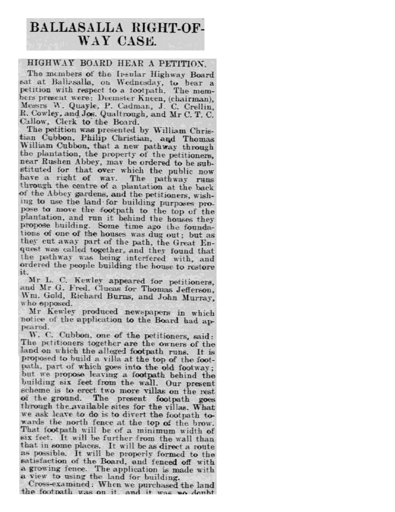
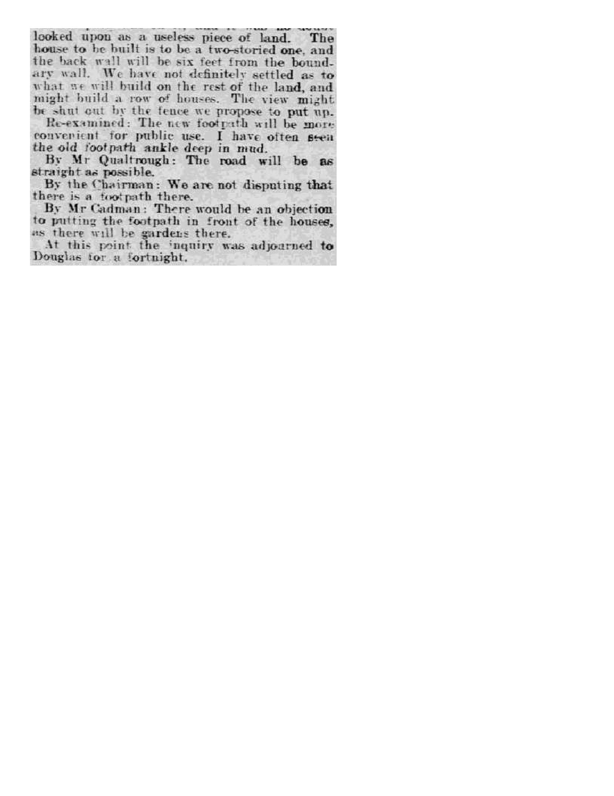
The Villa, 1938
Mrs Garside, 1941–42
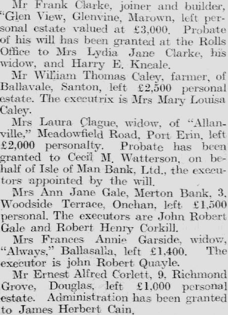
Alfred Montague Simcocks, 1954
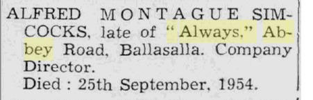
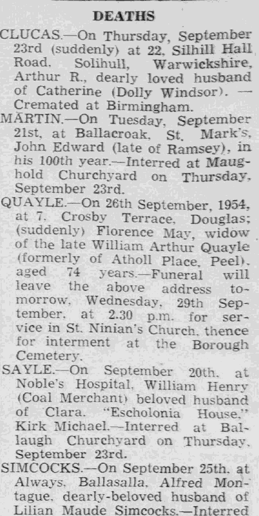
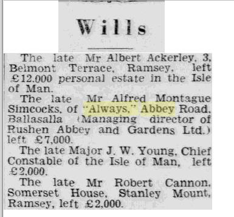
Appendix E
Deeds
The documents of title
The original deeds, conveyances, plans and related instruments in this collection are reproduced below. Click any thumbnail to enlarge; the PDF link opens the complete document.
The footpath diversion, 1904–05 (registered together June 1938)
Cubbon Family → The Highway Board
Cubbon Family & The Highway Board

The 1938 transactions
Albert Rowell → Rushen Abbey & Gardens Ltd
Rushen Abbey & Gardens Ltd → Lillian Maude Simcocks

The 1939 mortgage
Albert Rowell for Rushen Abbey & Gardens Ltd
The 1948 extension
Rushen Abbey & Gardens Ltd → Lillian Maude Simcocks
William Montague’s conveyance, 1963
Trustees of Lillian Maude Simcocks → William Montague Simcocks
The 1985 sale to Milligan
Government Property Trustees → Sydney James Milligan
Herbert Harold Simcocks (as trustee) → Sydney James Milligan
The 1996 transactions
Dolge → Sydney James Milligan
The 2003 conveyance
Appendix F
Planning
PA 85/216 — the 1985 extension
Planning application PA 85/216 was approved by the Malew Commissioners on 22 March 1985 — thirty-eight days after Sydney James Milligan completed the purchase of Always. The collection holds two distinct sets of material. The architectural drawings are high-quality scans of the original drawings, rescued from the Malew Commission before they were destroyed — the only surviving originals of this application. The application documents are Public Records Office copies: microfilm scans of the records the PRO held, as the PRO itself retained no originals. The survival of the Malew Commission drawings makes this collection considerably richer than the public archive alone allows. Click any thumbnail to enlarge; the PDF link opens the complete document.
Application documents (Public Records Office — microfilm copies only)
Public Records Office copies — microfilm scans only; PRO held no original documents. Applicant: J. Milligan — Architects: L. Phillips & Associates, Port Erin
Original architectural drawings (Malew Commission — originals, high quality)
Original drawings rescued from Malew Commission before destruction — high-quality scans by the present owner. L. Phillips & Associates: lower ground floor, ground floor, first floor & elevations